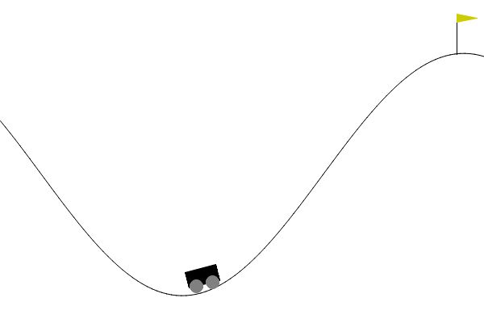
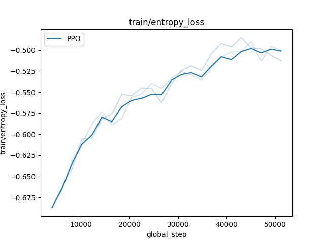
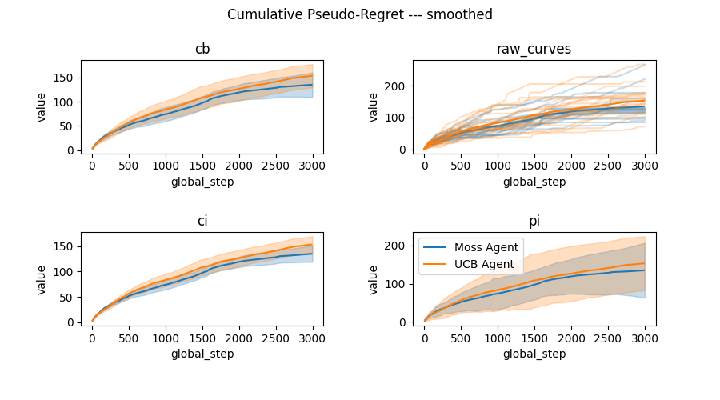
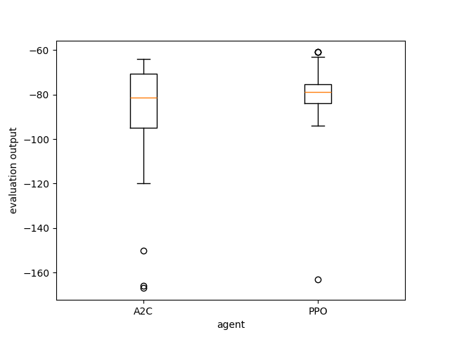

Visualization of policies and plots of training/evaluation metrics in rlberry¶
Good plots and visualization tools are important to design, debug and assess the performance of a RL algorithm.
Visualization of the policy of a trained agent. With gymnasium, it is customary to render the video of an episode of a trained agent, typically with gymnasium’s RecordVideo wrapper. This wrapper can be used in rlberry, but we also have another tool that allow us to render the videos as a gif for some simple environments (Chain and Gridworld from rlberry-scool) as it may be more adapted in some cases (no need for ffmpeg and video codecs).
Visualizing training metrics. In rlberry, all the training data acquisition is done via the writer and we then use mainly the function
rlberry.manager.plot_writer_datain order to plot the resulting metrics as they are recorded during training.Visualizing evaluations of a trained agent. The user can generate evaluation data for trained agents and plot the resulting evaluation boxplots with
rlberry.manager.evaluate_agents.
Generating videos and gif of the policy of a trained agent¶
Generating videos¶
To generate a video, we typically use a wrapper around the environment that will record what is happening in the environment and then we generate a video from these recordings. To do that with gymnasium, see RecordVideo wrapper, and for a use-case with rlberry see for instance our DQN on CartPole example.
Generating gifs with rlberry_scool env¶
Sometimes, it may be easier to use gif instead of videos (for teaching for instance, in order not to have to ask students to install ffmpeg on their computers). To do this, we have the tool rlberry.rendering.utils.gif_write that works for rlberry-scool environments rlberry_scool.envs.Chain and rlberry_scool.envs.Gridworld in the following way:
from rlberry.agents import AgentWithSimplePolicy
from rlberry_scool.envs import Chain
env_ctor = Chain
env_kwargs = dict(L=10, fail_prob=0.1)
# chain of length 10. With proba 0.1, the agent will not be able to take the action it wants to take.
env = env_ctor(**env_kwargs)
env.enable_rendering()
observation, info = env.reset()
for tt in range(5):
observation, reward, terminated, truncated, info = env.step(1)
done = terminated or truncated
env.save_gif("gif_chain.gif")
# clear rendering data
env.clear_render_buffer()
env.disable_rendering()

The tool save_gif works by collecting all the frames generated by the steps of env for each of the steps done after env.enable_rendering().
Generating gifs with Gymnasium env¶
If you want to use the save_gif tool with a gymnasium environment, you need to :
Use the
rlberry.envs.gym_makefunction to create the (wrapped) environment.Use
render_mode = "rgb_array"as parameter to create the environment. More information here.
An example here :
from rlberry.envs import gym_make
from rlberry.seeding import Seeder
import numpy as np
seeder = Seeder(123)
env = gym_make("MountainCar-v0", render_mode="rgb_array")
env.reseed(seeder)
env.enable_rendering()
observation, info = env.reset()
for tt in range(100):
action = np.random.randint(0, 1)
env.step(action)
saving_path = "./visu_gymnasium_gif.gif"
env.save_gif(saving_path)

Plotting training data and reward curves in rlberry¶
Training metrics in reinforcement learning are typically very unstable because there is randomness in the training process (e.g. neural networks) and the environment changes during the training. Then, if a single plot is very non-smooth due to the process variablility, it may become necessary to smooth the curve in order to be able to get any information from it.
Plotting training metric in rlberry goes through the use of rlberry.manager.plot_writer_data. The function can take as first argument either a trained rlberry agent (whose writer contains the training data) or a pandas dataframe containing the training data. The dataframe is supposed to adhere to rlberry format and must contain the columns tag (description of value being stored), value (the value), a column with the x-axis (whose name must be fed to the xtag parameter), n_simu (identifier for which training this corresponds to if there are several), name (name of the agent).
There are two type of plots that can be done with rlberry: synchronized plots are plots in which the x coordinate for each curve are the same, for instance this is what happens if the x coordinate are the steps in the environment (the variable called global_step). On the other hand, when the curves are not synchronized (for instance if the x coordinates are the wall time, then two separate training will give different x coordinates) we need to smooth the curves before doing any kind of aggregation. This distinction is done through the use of the smooth parameter in rlberry.manager.plot_writer_data using the library scikit-fda.
Plotting raw curves¶
If there are very few curves and they are not too “rugged”, they can be plotted directly through the parameter error_representation="raw_curves". In deep blue is plotted the mean curve, averaged over the training and in light blue are the inidividual curves for each training. We give here an example of the plot of the entropy loss function for stablebaselines3 PPO agent on CartPole-v1 environment.
from rlberry.envs import gym_make
from stable_baselines3 import PPO
from rlberry.agents.stable_baselines import StableBaselinesAgent
from rlberry.manager import ExperimentManager, plot_writer_data
import matplotlib.pyplot as plt
env_ctor, env_kwargs = gym_make, dict(id="CartPole-v1")
manager = ExperimentManager(
StableBaselinesAgent,
(env_ctor, env_kwargs),
agent_name="PPO",
fit_budget=5e4,
init_kwargs={"algo_cls": PPO, "policy": "MlpPolicy", "verbose": 0},
n_fit=3,
)
manager.fit()
plot_writer_data(
[manager],
"train/entropy_loss",
xtag=None,
error_representation="raw_curves",
smooth=False,
) # xtag = None will use global_step as x-axis
plt.savefig("entropy_loss.png")

Error representation – confidence intervals and prediction intervals¶
If the number curves becomes large, you may want to aggregate the curves and render an error bar using one of the available error representations.
We now explicit the various ways to represent the vertical errorbars of a curve in rlberry. Example of code to do these various plots is available in the example section: Illustration of plotting tools on Bandits.
There are several error representation availables in rlberry.manager.plot_writer_data:
error_representation="cb"is a confidence band on the mean curve using functional data analysis (band in which the mean curve is with probability larger than 1-level). Available only for smoothed curves, this is a simultaneous confidence interval along the whole curve and should be prefered to “ci” when possible because it allows us to interpret the whole curve simultaneously. See the docstring ofplot_writer_datafor details on this method.error_representation="ci"is a confidence interval around the mean curve. We use a Gaussian model around the mean smoothed curve (e.g. we do curve plus/minus gaussian quantile times std divided by sqrt of number of seeds).error_representation="pi"is a plot of a non-simultaneous prediction interval with gaussian model around the mean smoothed curve (e.g. we do curve plus/minus gaussian quantile times std).
Visualization of evaluations of trained agents in rlberry¶
Once agents are trained, you may want to compare their evaluations on environments. This is done through rlberry.manager.evaluate_agents, this function takes as input a list of rlberry.manager.ExperimentManager and plot the boxplots of the evaluations of each agent. If there are several fits for the agent in the experiment manager, an agent is chosen at random at each iteration (you can use the parameter choose_random_agents to change this behavior).
from rlberry.agents.stable_baselines import StableBaselinesAgent
from stable_baselines3 import PPO, A2C
from rlberry.manager import ExperimentManager, evaluate_agents
from rlberry.envs import gym_make
import matplotlib.pyplot as plt
names = ["A2C", "PPO"]
managers = [
ExperimentManager(
StableBaselinesAgent,
(gym_make, dict(id="Acrobot-v1")),
fit_budget=1e5,
agent_name=names[i],
eval_kwargs=dict(eval_horizon=500),
init_kwargs={"algo_cls": algo_cls, "policy": "MlpPolicy", "verbose": 0},
n_fit=1,
seed=42,
)
for i, algo_cls in enumerate([A2C, PPO])
]
for manager in managers:
manager.fit()
data = evaluate_agents(managers, n_simulations=50)
plt.savefig("example_eval.png")
